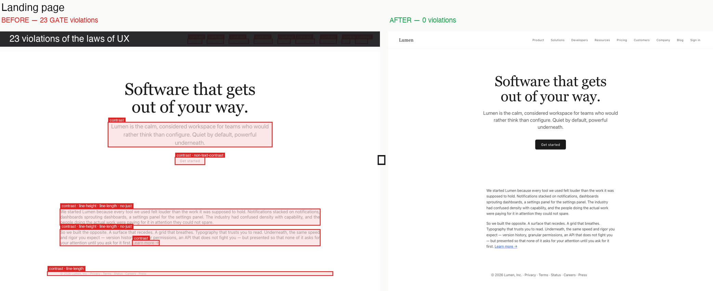
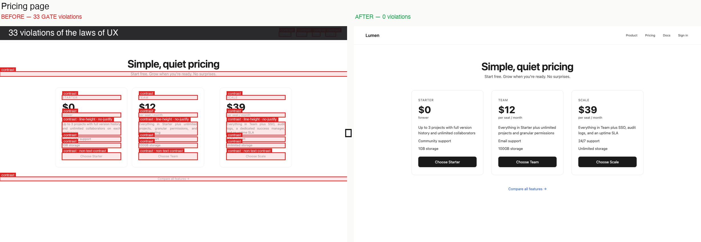
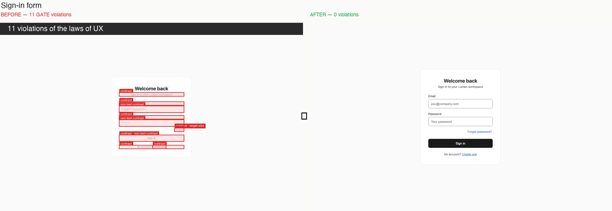
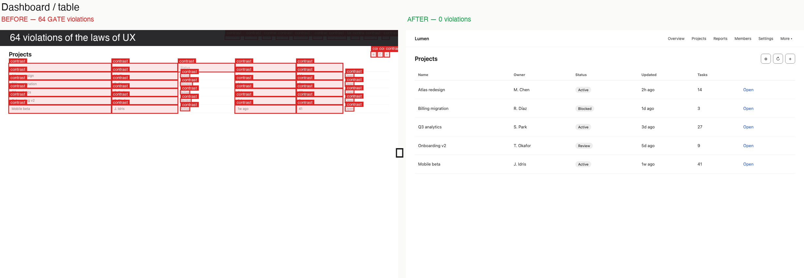
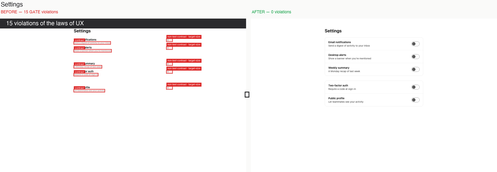
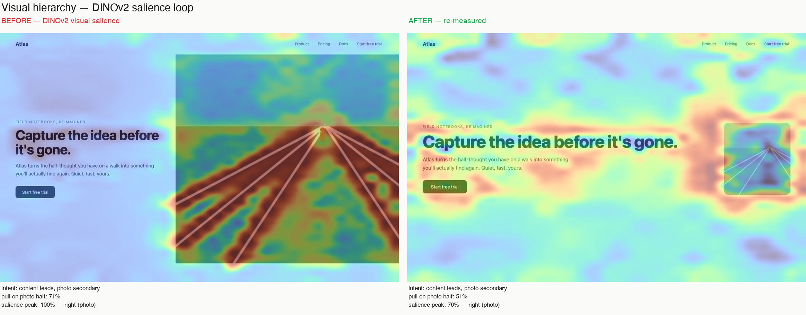

An agent that audits your live UI against the laws of UX — contrast, Fitts, line length, clicks-to-goal — and rewrites the CSS until every violation is gone. Each fix cited to its rule.
Design Twitter argues about taste for a living. Every AI design tool today is one model squinting at a screenshot and guessing what looks good. That's taste cosplay. "Beautiful" is an opinion. 4.5:1 contrast is WCAG 1.4.3. A 24px tap target is WCAG 2.5.8. 66 characters per line is Bringhurst. TASTELESS measures these on your rendered pixels and fixes what fails — no taste required.
Real browser sessions — not mockups. The agent renders the UI, measures it, and rewrites the CSS until the gates pass.
Each panel is the rendered UI with red, cited FAIL badges on every offender — beside the same UI after the loop. Same taste in, fixed function out.





Everything else is a measured value against a published threshold. Visual hierarchy is the single perceptual rule — so we show it, we don't gate on it: an unsupervised salience map (DINOv2 with registers) of where the layout pulls the eye, versus where you said the priority is. The gap is the bug.

To be precise, because someone will ask: this is not eye-tracking. It's an unsupervised salience proxy — it ignores reading order and your top-down goals on purpose. It will never make flat text out-pull a photograph. It shows the pull you built versus the priority you declared.
| Class | Rule | Threshold | Source |
|---|---|---|---|
| GATE | Text contrast | 4.5:1 / 3:1 (AA) | WCAG 1.4.3 |
| GATE | Non-text / control contrast | 3:1 | WCAG 1.4.11 |
| GATE | Target size (+ spacing exception) | 24px / 44px | WCAG 2.5.8 / 2.5.5, HIG, Material |
| GATE | Line-height (body) | ≥ 1.5× | WCAG 1.4.8 |
| GATE | Line length | ≤ 80, ideal ~66 | WCAG 1.4.8 / Bringhurst |
| GATE | No justified body | ragged-right | WCAG 1.4.8 |
| SCORE | Fitts cost | small + far = costly | Fitts's Law |
| SCORE | Hick overload | log₂(n+1) | Hick's Law |
| SCORE | Clicks-to-goal | measured vs target | Interaction Cost (NN/g) |
| SCORE | Proximity | even / intentional gaps | Law of Proximity |
| SCORE | Non-semantic control | native / role+keyboard | WAI-ARIA |
| SHOWN | Visual hierarchy | salience vs intent | DINOv2 + registers |
Render the live UI; pull geometry + computed styles + the colour behind every pixel of text.
Run every law. Emit a cited scorecard: measured value, threshold, fix, source.
Edit the real CSS — not an overlay — with the cited fix. Re-render. Verify no regression.
Loop until the gates are clean. Surface the score notes for a human to decide.